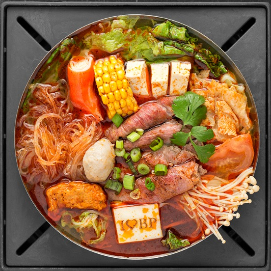

Boiling Point
My favorite spicy food in Seattle. There are a lot of soup base and toppings that we can choose.
My favorite spicy food in Seattle. There are a lot of soup base and toppings that we can choose.
My favorite place for sandwich in u-district. I love their salad, too!
The best chinese restaurant in U-district! I love their chinese spicy chicken!
The best katsu restaurant in Seattle. I love all menus in Kobuta and Ookami!
All you can eat BBQ! We can choose various meats. I love it.
The best Korean BBQ in seattle! The meat is very fresh and it tastes good!